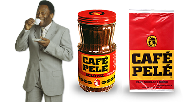

| Página principal / | Cafés |
Café

IBIRITIMA | ES
IBIRITIMA | ES | BRASIL
SITIO TERRA ALTA
Produtor: LIMA DELEON
Variedade: OEIRAS
Processo: NATURAL
Altitude: 1000m
Torrador: TRENTINO CAFÉS ESPECIAIS
Notas: Frutas amarelas, jaca madura
250gr
OCafé |
|---|
| Café bolsas embalagens blog |
| Página principal / | Cafés |
IBIRITIMA | ES | BRASIL
SITIO TERRA ALTA
Produtor: LIMA DELEON
Variedade: OEIRAS
Processo: NATURAL
Altitude: 1000m
Torrador: TRENTINO CAFÉS ESPECIAIS
Notas: Frutas amarelas, jaca madura
250gr